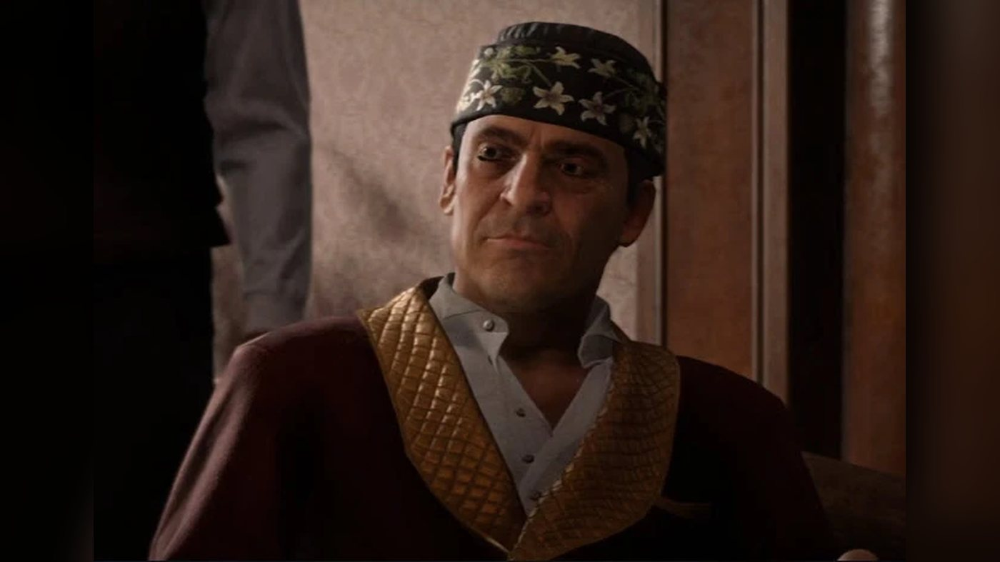
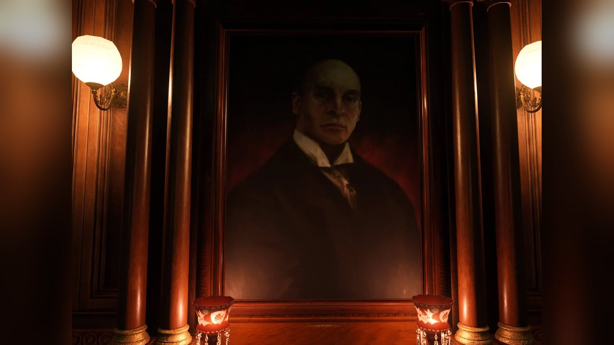
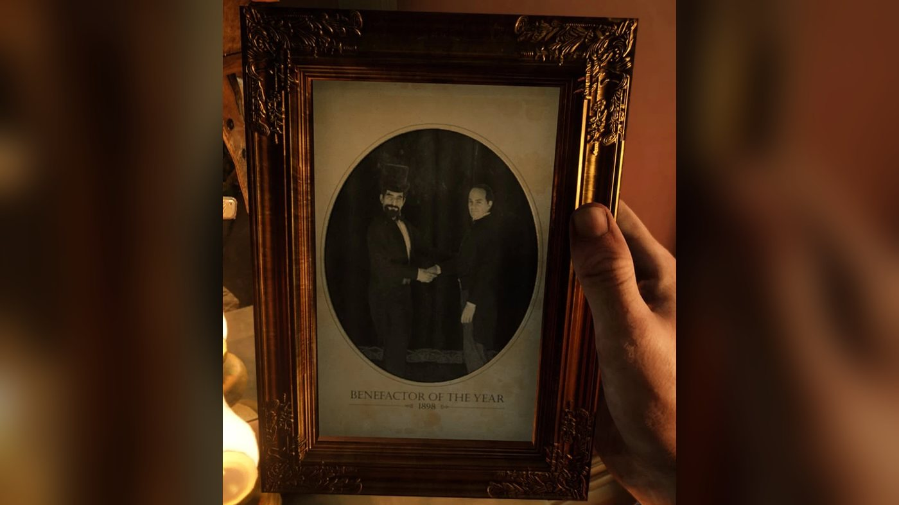
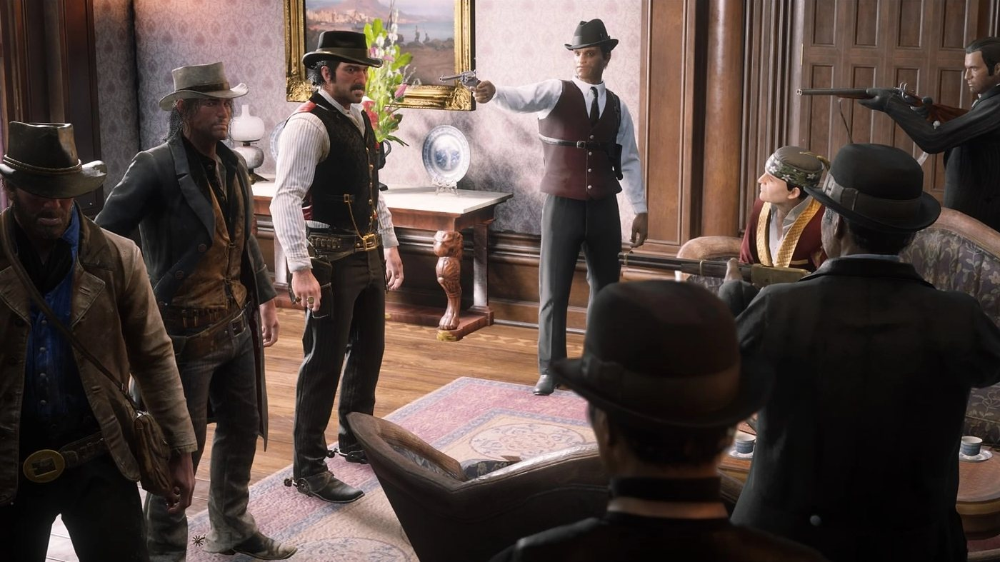
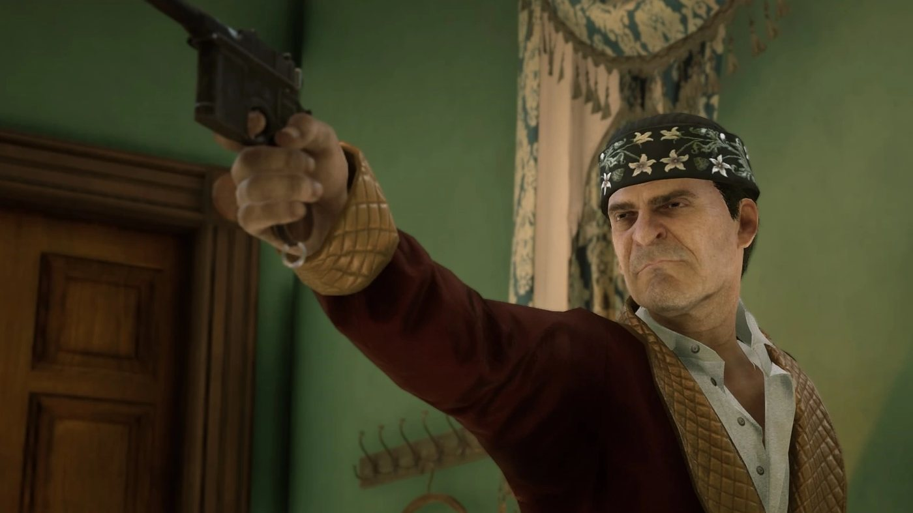
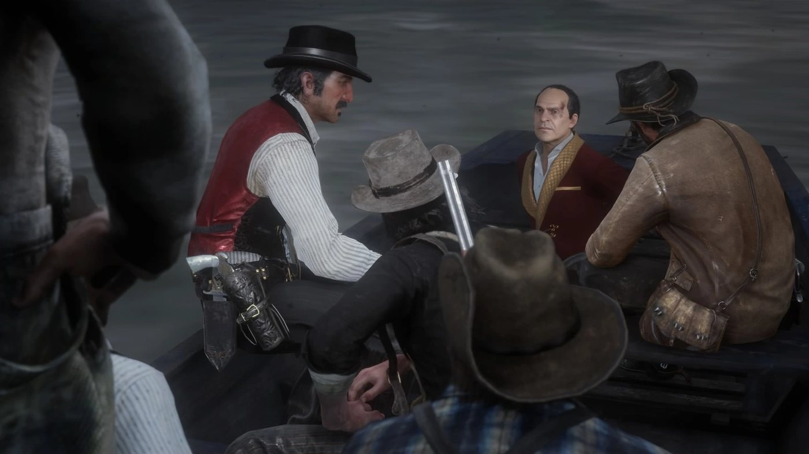
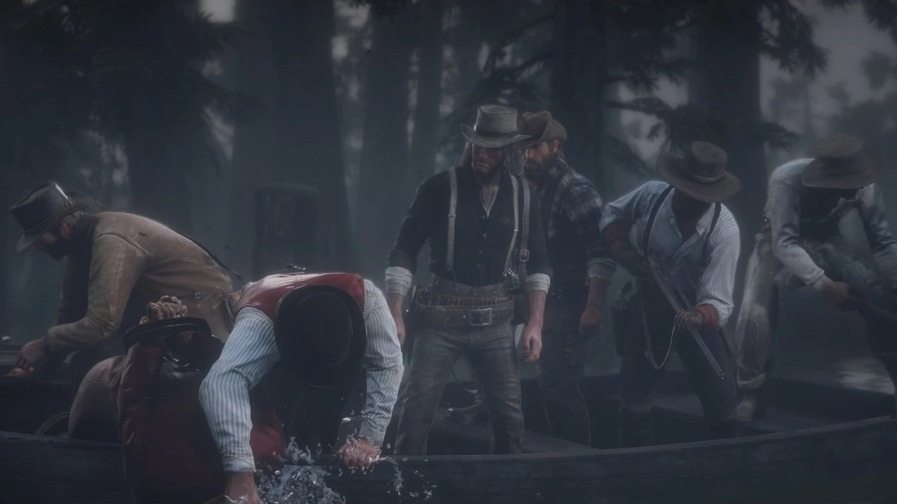

Personnage · Saint-Denis
Angelo Bronte
Angelo Bronte est un homme d'affaires italien et chef de la pègre de Saint-Denis dans Red Dead Redemption 2 (2018), dont l'action se déroule en 1899. Au chapitre 3, la famille Braithwaite enlève Jack Marston, et les fils de Catherine Braithwaite lui livrent l'enfant. Au chapitre 4, Dutch van der Linde, Arthur Morgan et John Marston récupèrent Jack dans sa demeure en échange d'un service rendu au cimetière de la ville. Bronte invite ensuite Dutch à la réception du maire et lui désigne une station de tramway, où le braquage tourne au guet-apens policier. Le gang prend d'assaut sa demeure et l'emmène, puis Dutch le noie et jette son corps à un alligator.
Il est interprété par Jim Pirri.
- Nom
- Angelo Bronte
- Surnoms
- Signor Bronte ; Mister Big et Papa Bronte, selon le Red Dead Wiki
- Naissance
- Non précisée dans le jeu ; vers 1844 selon le Red Dead Wiki, qui la déduit de son âge (55 ans) dans un article de presse de 1899
- Mort
- 1899, noyé par Dutch van der Linde dans "Revenge is a Dish Best Eaten"
- Statut
- Décédé
- Nationalité
- Italienne
- Résidence
- Une demeure de Flavian Street, à Saint-Denis
- Activité
- Homme d'affaires et chef de la pègre
- Affiliations
- Son organisation de Saint-Denis (la Saint Denis Mob, dans le Red Dead Wiki), avec Guido Martelli pour second ; des affaires avec la famille Braithwaite
- Ennemi
- Le gang Van der Linde
- Arme
- Pistolet Mauser
- Jeux
- Red Dead Redemption 2
- Interprète
- Jim Pirri
Biographie
Origines
Le jeu ne donne ni le lieu ni la date de naissance d'Angelo Bronte. Il est italien, et le seul indice sur son âge vient d'un article de journal de 1899 qui lui donne 55 ans. À cette date, il habite une demeure de Flavian Street, à Saint-Denis, dans l'État du Lemoyne. La maison s'adosse à l'eau, avec un ponton à l'arrière, et des hommes de son organisation la gardent. Officiellement, Bronte est un homme d'affaires. Le Red Dead Wiki appelle l'organisation qu'il dirige la Saint Denis Mob et lui attribue corruption, contrebande et racket, sous l'œil complaisant de la police municipale.
Cet article, "Lawman Found Dead", paraît dans le Blackwater Ledger n° 65, le Saint Denis Times n° 46 et la New Hanover Gazette n° 30 ; le Red Dead Wiki le situe pendant le séjour de la bande à Horseshoe Overlook. On y apprend que l'agent Henry Jenkins, policier chevronné, a été retrouvé mort le mardi précédent, une balle dans la tête, dans ce qui ressemble à une embuscade, au fond des latrines de la maison qu'il partageait avec son épouse depuis vingt ans. Jenkins avait dirigé une enquête visant Bronte. Le journal précise que Bronte soutient depuis longtemps les forces de l'ordre locales et fréquente volontiers les réceptions données en l'honneur des élus de Saint-Denis. Certains le soupçonnent d'appartenir à un réseau de contrebande et de racket. Plusieurs responsables prennent sa défense, estiment qu'on lui reproche ses origines italiennes et mettent en avant ses dons aux écoles et aux œuvres pour les malades et les personnes âgées. Les intertitres annoncent que Bronte présente ses condoléances et que la thèse du crime est retenue.
Red Dead Redemption 2 (1899)
Chapitre 3 : Clemens Point
Dans les missions de l'histoire, le nom de Bronte surgit pour la première fois à la fin du séjour de la bande à Clemens Point. Jack Marston, le fils de quatre ans de John et d'Abigail Marston, disparaît du camp ; l'enlèvement lui-même n'est jamais montré. La bande en conclut que la famille Braithwaite l'a pris pour se venger du vol de ses chevaux. Dans "Blood Feuds, Ancient and Modern", Dutch van der Linde mène l'assaut contre Braithwaite Manor. La bande abat les hommes de la famille, fouille la maison sans trouver l'enfant et y met le feu. Traînée dehors, Catherine Braithwaite avoue que ses fils ont livré Jack à Bronte. Pressée de questions, elle ajoute que le garçon se trouve soit à Saint-Denis, soit sur le bateau pour l'Italie. La bande l'épargne, et elle retourne en courant dans la maison en flammes.
Une lettre de Catherine à Bronte peut être ramassée sur une table de nuit du manoir au cours de la même mission. Adressée au "Signor Bronte", elle répond à un message qu'il lui a envoyé la semaine précédente. Catherine lui rappelle que leurs deux familles travaillent ensemble depuis cinq ans, que les Braithwaite ont toujours fourni un produit de qualité et réglé leurs dettes, et qu'il est leur client le plus précieux. Elle évoque des difficultés de trésorerie et une rupture d'approvisionnement, et le prie de ne pas mettre fin à leur association. Elle reconnaît que les dettes ont grossi, promet de les couvrir sous peu et d'en payer les intérêts dans le trimestre, et assure que son fils cadet, un dépensier, s'est assagi. La lettre s'interrompt au milieu d'une phrase.
Chapitre 4 : Saint-Denis
La bande s'installe à Shady Belle, une ancienne maison de plantation abandonnée dans le bayou, non loin de Saint-Denis. Dans "The Joys of Civilization", Dutch s'est déjà renseigné sur Bronte au Bastille Saloon sans rien obtenir, et envoie Arthur Morgan tenter sa chance. Le barman refuse de parler, mais un client oriente Arthur vers les enfants des rues de la ruelle de derrière. Un gamin nommé Cleet vole la sacoche d'Arthur pendant la visite qu'ils lui proposent. Selon l'issue de la poursuite, Cleet lui-même, ou le chef d'une bande d'enfants armés, rend la sacoche à Arthur avec l'adresse de Bronte. Arthur fait son rapport à Dutch, et ils conviennent de retrouver John en face de la maison.
Dans "Angelo Bronte, A Man of Honor", Arthur retrouve Dutch et John dans le parc qui fait face à la demeure. En traversant la rue, Arthur prévient qu'une bagarre coûterait la vie à Jack, et Dutch lui demande de garder son sang-froid. Il attrape l'un des gardes de la grille et l'envoie chercher Bronte. Selon le Red Dead Wiki, les gardes font entrer les trois hommes mais les tiennent en joue. Bronte les reçoit froidement. Il leur reproche de venir chez lui sans s'être lavés et de lui faire la leçon sur la façon de se conduire. Dutch fait passer le trio pour de braves gens de la campagne et minimise l'enlèvement. Le ton de Bronte bascule : il déclare à Dutch qu'il l'adore, lui serre la main et fait apporter à boire aux trois hommes.
Bronte pose une condition au retour de l'enfant : débarrasser le cimetière de Saint-Denis d'une bande de pilleurs de tombes. Le Red Dead Wiki précise que ces pilleurs ne lui avaient pas versé sa part. Arthur et John se chargent du travail tandis que Dutch reste à la demeure avec Bronte. En chemin, Arthur félicite John d'avoir gardé son calme ; John répond qu'il ne fait pas confiance à Bronte et revient sur ses manquements de père. Arthur suppose que les Braithwaite voulaient réclamer une rançon pour Jack et l'ont envoyé chez Bronte pour le mettre hors de portée du gang ; maintenant qu'il ne reste plus de Braithwaite pour payer, dit-il, le garçon ne sert plus à grand-chose à Bronte. Au cimetière, les deux hommes abattent les pilleurs, récupèrent leur butin et s'esquivent au nez de la police qui arrive. De retour à la demeure, ils trouvent Dutch qui attend dehors avec Jack.
Sur la route de Shady Belle, Jack raconte son séjour avec plaisir. Il avait sa propre chambre et un grand coffre à jouets, prenait un bain tous les soirs, mangeait des spaghettis et a appris les mots italiens pour "cheval" et "pantoufle". John est soulagé de savoir que l'enfant a été bien traité. Dutch annonce à Arthur que Bronte les a invités à une garden-party chez Henri Lemieux, le maire de Saint-Denis. Au camp, Abigail retrouve son fils avec une joie immense, et la bande organise une fête pour son retour.
Dans "The Gilded Cage", Dutch exige que la bande achète des tenues dignes de l'occasion. Le soir venu, Dutch, Arthur, Hosea Matthews et Bill Williamson se rendent en smoking à la demeure du maire, dans une voiture conduite par Lenny Summers, en riant de ce que l'invité d'honneur soit un chef du crime. Ils déposent leurs armes à l'entrée, et Luca Napoli, un domestique de Bronte, les conduit à l'intérieur. Hosea et Bill se mêlent aux invités pendant que Dutch et Arthur montent retrouver Bronte sur un balcon. Selon le Red Dead Wiki, son bras droit Guido Martelli se tient à ses côtés. Bronte les accueille et passe en revue les invités en contrebas, avec une pique pour presque chacun. Le wiki ajoute qu'il glisse aussi quelques phrases en italien au cours de la soirée ; sa liste de citations en traduit une par "I look forward to watching you die!" (j'ai hâte de vous voir mourir !).
Il désigne le maire, qu'il présente comme un homme prêt à tout pour de l'argent. Il nomme Alberto Fussar, qui vient en ville, dit-il, pour se livrer à la débauche, ainsi que Hobart et Brenda Crawley. Il se moque de Rains Fall et d'Eagle Flies, de la tribu wapiti, au moment où ils remettent une lettre au maire. Il leur montre aussi le journaliste Hector Fellowes, "that wretched newspaperman" (ce misérable journaliste) selon les mots que lui prête le Red Dead Wiki, et suggère que Dutch pourrait un jour le tuer pour lui, une idée que Dutch ne relève pas. Quand Dutch explique que la bande a besoin d'argent, Bronte lui indique qu'une station de tramways de la ville devrait contenir largement de quoi faire. Dutch le remercie, et Luca raccompagne les deux hommes en bas. Plus tard dans la soirée, le majordome du maire lui signale un appel téléphonique de Leviticus Cornwall, et Arthur dérobe dans le bureau du maire les documents que Lemieux devait signer.
Une lettre de Lemieux à Bronte, datée de mai 1899, peut être prise dans le même bureau. Elle commence par "Mon Cher Angelo" et remercie Bronte d'un don que le maire qualifie de magnifique. Lemieux écrit que la ville est une fois de plus redevable à Bronte, et que ce don sera la pierre angulaire du financement d'une université à Saint-Denis. Il ajoute que la ville est en bonne voie de réunir les fonds d'une faculté de théologie et d'une faculté de lettres, et signe en ami.
Dans "Horsemen, Apocalypses", Dutch fait venir Arthur pour préparer l'attaque de la station de tramways suggérée par Bronte. Il leur faut un troisième homme, et Arthur propose Lenny. Dans "Urban Pleasures", Dutch, Arthur et Lenny se retrouvent dans une ruelle face à la station, nouent leurs foulards et annoncent le braquage. Sur ordre de Dutch, Arthur dépouille trois clients et force l'employé à ouvrir le coffre. Celui-ci ne contient que quelques dollars, et Lenny voit la rue se remplir de policiers armés. Dutch comprend que Bronte les a piégés. Les trois sautent dans un tramway en marche et traversent les rues en tirant, jusqu'à ce que les freins lâchent et que la voiture se renverse contre une clôture. Ils se battent à pied, puis quittent la ville dans un chariot conduit par Lenny ; en chemin, deux hommes de Bronte leur tirent dessus quand ils passent devant sa demeure.
Arthur partage le butin : quinze dollars et vingt-cinq cents pour chacun. Dutch enrage que Bronte l'ait trahi alors qu'il ne lui avait rien fait. Arthur lui répond que Bronte ne veut tout simplement pas d'hommes comme eux dans sa ville. Dutch en conclut que la banque de Saint-Denis est désormais leur seule porte de sortie. Un télégramme retrouvé plus tard dans la demeure de Bronte montre comment le piège a été tendu. Signé de Bronte et adressé au chef de la police Lambert, il réclame beaucoup d'hommes à la station de tramways et aucun dans le quartier commerçant jusqu'à nouvel ordre : "NEED LOT OF MEN ON THE TROLLEY STATION. NO MEN IN COMMERCIAL DISTRICT UNTIL I SAY OTHERWISE."
Dans "Country Pursuits", Arthur surprend une dispute entre Dutch et Hosea à Shady Belle. Dutch veut tuer Bronte avant le braquage de la banque, parce que Bronte tient toute la ville. Hosea juge le projet insensé et y voit une vengeance, ce que Dutch conteste. Dutch demande à Arthur de trancher, et Arthur se range de son côté ; Hosea prévient Dutch qu'il va tous les perdre. Sur la route de Lagras, Arthur demande s'il s'agit de la banque ou de la station de tramways, et Dutch répond que cela n'a pas d'importance. À Lagras, Dutch et Arthur retrouvent Thomas, un pêcheur déjà convenu pour mener la bande en barque jusqu'à l'arrière de la demeure de Bronte, et arrachent son jeune aide Jules au Legendary Bullgator.
Dans "Revenge is a Dish Best Eaten", Thomas dépose Dutch, Arthur, John, Bill et Lenny au ponton situé derrière la demeure. Ils escaladent le mur d'enceinte et avancent sans bruit jusqu'à neutraliser les deux premiers gardes. Les hommes de Bronte ouvrent alors le feu depuis la cour, et la bande se fraie un chemin à travers eux et leurs renforts. Arthur fait sauter la serrure de la porte d'entrée, et la bande nettoie le rez-de-chaussée avant de fouiller l'étage. D'après le Red Dead Wiki, Bronte s'était caché, dans sa baignoire selon la page que le wiki consacre à son organisation, et son pistolet s'enraye quand il tente de tirer sur les deux hommes. Bronte lance son pistolet Mauser sur John et se met à marchander, et John l'assomme d'un coup de poing.
Une liste de comptes intitulée "June" est posée sur un bureau de la demeure. Elle aligne des sommes de 15 à 50 dollars en face des noms de quatorze commerces de Saint-Denis, parmi lesquels le Café Lamarque, la Hamill Pharmacy, le Corinthian Club et l'Hotel Chevalier ; elles totalisent 385 dollars. La liste ne dit pas à quoi correspondent ces sommes. Des policiers arrivent en nombre. Arthur porte Bronte, inconscient, jusqu'à la barque pendant que la bande tient les policiers à distance.
Sur l'eau, Bronte reprend connaissance et se querelle avec Dutch. Il insulte Dutch et la vie qu'il mène, et promet des milliers de dollars à celui des hommes de la barque qui tuera Dutch ; personne ne bouge. Il prévient que la loi les retrouvera et que les chiens sont déjà en route. Hors de lui, Dutch lui maintient plusieurs fois la tête sous l'eau jusqu'à ce qu'il meure, puis fait basculer le corps par-dessus bord ; un alligator l'emporte. Dutch dit à John que c'était eux ou lui, et qu'il préfère que ce soit lui. Arthur et John sont visiblement ébranlés.
Après la mort de Bronte, selon le Red Dead Wiki, ce qui reste de son organisation devient hostile chaque fois que ses hommes croisent Arthur. La bande maintient le braquage de la Lemoyne National Bank dans "Banking, The Old American Art", qui tourne au piège tendu par les Pinkerton : Hosea et Lenny sont tués, et John est arrêté.
Red Dead Redemption 2 : l'épilogue (1907)
Épilogue I : Pronghorn Ranch
Huit ans plus tard, John et Jack travaillent au Pronghorn Ranch, dans le West Elizabeth. Dans "Simple Pleasures", John présente son fils au garçon de ferme Abe, et tous trois nettoient les écuries. En maniant la pelle, John fait remarquer à Jack qu'il est bien loin, désormais, de la demeure d'Angelo Bronte. Jack ne se souvient pas de l'endroit.
Épilogue II : Beecher's Hope
En 1907, c'est Guido Martelli, jadis bras droit de Bronte, qui fait la loi à Saint-Denis. Dans "Bare Knuckle Friendships", Charles Smith explique à John qu'il avait promis à Martelli de perdre un combat en ville, avant de le remporter. Charles ajoute que Martelli tient le chef de la police dans sa poche, et quatre hommes de Martelli s'en prennent à eux deux sur les quais. D'après le Red Dead Wiki, la demeure de Flavian Street appartient désormais à Martelli.
Personnalité
Les descriptions de personnages publiées par Rockstar en septembre 2018 portent sur le gang Van der Linde et ne comprennent pas Bronte. En route pour la réception du maire, dans "The Gilded Cage", Dutch lance à Arthur, Bill et Hosea que "the guest of honor is the worst crook in town" (l'invité d'honneur est le pire escroc de la ville). Selon le Red Dead Wiki, Arthur le décrit dans son journal comme "a lizard in a suit" (un lézard en costume). Toujours selon le wiki, Bronte surnomme Arthur "the angry cowboy" (le cow-boy en colère). Son image publique ressort de l'article de presse et de la lettre du maire cités dans la biographie.
Dans ses propres mots
À la première rencontre, il sermonne Dutch : "So, you walk into my city...stinking of shit and looking like this...and you come into my house, before you have a bath...and you tell me how to act?" (alors vous entrez dans ma ville en puant la merde, avec cette allure, vous entrez chez moi avant même de prendre un bain, et vous m'apprenez à me tenir ?). Il ajoute : "You ask me to show compassion? Have I not shown you almost infinite compassion already...by simply allowing you to breathe in my presence?" (vous me demandez de la compassion ? Ne vous en ai-je pas déjà montré une quasi infinie, rien qu'en vous laissant respirer en ma présence ?). Puis il change de ton : "You twist words. You lie shamelessly. You think you are better than everyone else... I love you! Give these men drinks!" (vous tordez les mots, vous mentez sans vergogne, vous vous croyez meilleur que tout le monde… Je vous adore ! Servez à boire à ces messieurs !). Pendant la réception, en voyant Rains Fall et Eagle Flies s'approcher du maire, il glisse : "Yes, hand a letter to the mayor. Oh yeah, that will save you." (c'est ça, remettez une lettre au maire ; voilà qui va vous sauver).
Dans la barque, après son enlèvement, il lance à Dutch : "You are nothing. You do nothing. You mean nothing. You stand for nothing. Me? I run a city... and when the law catch up to you... you will die like nothing. I am this country. You... you... you are what people are running from." (vous n'êtes rien, vous ne faites rien, vous ne valez rien, vous ne défendez rien. Moi ? Je dirige une ville, et quand la loi vous rattrapera, vous mourrez comme un rien. Ce pays, c'est moi. Vous, vous êtes ce que les gens fuient). Ses derniers mots sont : "The law will find you! Already the dogs are on the way." (la loi vous retrouvera ! Les chiens sont déjà en route).
Noms
Catherine Braithwaite ouvre sa lettre par "Dear Signor Bronte", et le maire lui écrit "Mon Cher Angelo" (voir la biographie). Le Red Dead Wiki mentionne aussi Mister Big et une variante plus longue et injurieuse, qu'il prête toutes deux, avec un point d'interrogation, à un client du Bastille Saloon. Il indique aussi que Jack l'appelle Papa Bronte, un nom qu'il signale comme non confirmé. Bronte est par ailleurs le nom d'une petite ville de Sicile, relève le wiki.
Apparence
Quand la bande vient chez lui, il porte une calotte à fleurs et une veste d'intérieur cramoisie à galons dorés, sur une chemise blanche et un pantalon noir. Pour la réception du maire, il passe un habit de soirée, avec nœud papillon noir. Il a les cheveux noirs et le teint hâlé.
Relations

Dutch van der Linde
Dutch négocie avec Bronte le retour de Jack au chapitre 4 et gagne sa sympathie. Bronte l'invite à la réception du maire et lui indique la station de tramway, qui se révèle être un piège. Dutch le fait alors enlever et le noie (voir la biographie). Les paroles de Bronte à Dutch sont citées dans la rubrique Personnalité.

Jack Marston
Les Braithwaite livrent l'enfant enlevé à Bronte, qui le rend à Dutch pendant qu'Arthur et John nettoient le cimetière (voir la biographie). La liste des événements de camp du Red Dead Wiki rapporte une conversation entre Jack et Hosea à la fontaine de Shady Belle. Hosea le taquine : il le croyait parti rejoindre le cirque. Jack décrit la maison de Bronte comme un changement agréable, avec des gens gentils et un lit dans une chambre rien qu'à lui ; quand Hosea parle de cage, il répond que cela tenait plutôt du palais de conte de fées, et Hosea fait de lui leur petit prince. Si Arthur passe par là, Hosea note que le garçon a pris goût au luxe, et Arthur plaisante sur le logis de la bande, une maison de marais cernée d'alligators.

John Marston
Le père de Jack se rend à la demeure avec Dutch et Arthur et nettoie le cimetière pour le compte de Bronte ; en chemin, il confie à Arthur qu'il ne lui fait pas confiance. Lors de l'assaut, c'est John qui assomme Bronte (voir la biographie).

Arthur Morgan
Arthur trouve l'adresse de Bronte, se rend à sa demeure puis à la réception, participe au coup de la station de tramway et porte Bronte inconscient jusqu'à la barque (voir la biographie). Le surnom que lui donne Bronte et la note d'Arthur sur Bronte dans son journal sont cités dans la rubrique Personnalité.

Hosea Matthews
Hosea assiste à la réception du maire mais se mêle aux invités pendant que Dutch et Arthur rencontrent Bronte. Il juge insensé le projet de Dutch de tuer Bronte (voir la biographie).

Lenny Summers
Lenny conduit la voiture jusqu'à la réception du maire, sert de troisième homme pour le coup de la station de tramway suggéré par Bronte et participe à l'assaut contre sa demeure (voir la biographie).

Bill Williamson
Bill se rend à la réception du maire et participe à l'assaut contre la demeure de Bronte (voir la biographie).

Catherine Braithwaite
La matriarche des Braithwaite fait affaire avec Bronte depuis cinq ans, d'après la lettre qu'elle lui adresse, et ses fils lui livrent Jack. Elle livre son nom à Dutch à Braithwaite Manor (voir la biographie).

Alberto Fussar
Bronte désigne le gouverneur de Guarma à Dutch et à Arthur lors de la réception du maire (voir la biographie).
Guido Martelli
Son second se tient à ses côtés lors de la réception du maire, selon le Red Dead Wiki, et fait la loi à Saint-Denis en 1907 (voir la biographie).
Luca Napoli
Ce domestique de Bronte récupère les armes de la bande à l'entrée de la réception du maire et conduit Dutch et Arthur jusqu'à lui. Le Red Dead Wiki note que son nom de famille se fait entendre quand le majordome du maire, Pierre, le salue.
Henri Lemieux
Le maire de Saint-Denis organise la réception dont Bronte est l'invité d'honneur et le remercie par écrit d'un don à la ville (voir la biographie).
Benjamin Lambert
Le chef de la police de Saint-Denis est le destinataire du télégramme de Bronte au sujet de la station de tramway (voir la biographie).
Hector Fellowes
À la réception du maire, Bronte montre ce patron de presse à Dutch et suggère qu'il pourrait un jour le tuer pour son compte (voir la biographie).
Rains Fall and Eagle Flies
Bronte se moque du chef wapiti et de son fils quand ils remettent une lettre au maire pendant la réception (voir Dans ses propres mots).
Henry Jenkins
Cet agent de la police de Saint-Denis avait mené une enquête sur Bronte avant d'être retrouvé abattu, selon un article de presse (voir la biographie).
L'organisation de Saint-Denis
Les documents trouvés à la réception et chez lui montrent ses liens avec le maire, avec le chef de la police de Saint-Denis, Benjamin Lambert, et avec une liste de commerces de la ville (voir la biographie).
La demeure et ses gardes
Sa demeure se dresse sur Flavian Street, à Saint-Denis, et des membres de son organisation la gardent. Selon le Red Dead Wiki, ils deviennent hostiles si le joueur pénètre dans la propriété en exploration libre. Si le joueur est recherché alors qu'il s'y trouve, ils se joignent aux hommes de loi pour le poursuivre. En dehors des cinématiques et de l'assaut, les portes de la maison restent fermées à clé, ajoute le wiki. D'après le Red Dead Wiki, ses hommes ont une tenue qui leur est propre, avec notamment un harnais d'étui croisé et un ceinturon noir, même si elle ressemble à un simple costume.
Missions
Bronte apparaît en personne dans trois missions de Red Dead Redemption 2, toutes au chapitre 4. D'autres missions évoquent son nom, son tuyau, sa demeure ou son ancienne organisation, de l'assaut contre Braithwaite Manor à l'épilogue de 1907 ; elles figurent dans le second tableau. Le déroulé des événements se trouve dans la Biographie.
Apparitions
| Mission | Chapitre | Rôle de Bronte |
|---|---|---|
| Angelo Bronte, A Man of Honor | 4. Saint-Denis | Reçoit Dutch, Arthur et John dans sa demeure et rend Jack une fois le cimetière débarrassé des pilleurs de tombes. |
| The Gilded Cage | 4. Saint-Denis | Invité d'honneur de la garden-party du maire Lemieux ; présente les invités à Dutch et Arthur et leur souffle le tuyau de la station de tramways. |
| Revenge is a Dish Best Eaten | 4. Saint-Denis | Capturé dans sa demeure, assommé par John et noyé par Dutch depuis la barque. |
Autres missions liées à Bronte
| Mission | Chapitre | Lien avec Bronte |
|---|---|---|
| Blood Feuds, Ancient and Modern | 3. Clemens Point | Catherine Braithwaite révèle que ses fils ont livré Jack à Bronte ; sa lettre à Bronte se trouve dans le manoir. |
| The Joys of Civilization | 4. Saint-Denis | Dutch et Arthur cherchent l'adresse de Bronte à Saint-Denis. |
| Horsemen, Apocalypses | 4. Saint-Denis | Dutch et Arthur préparent l'attaque de la station de tramways suggérée par Bronte. |
| Urban Pleasures | 4. Saint-Denis | Le tuyau de Bronte se révèle un piège ; Dutch, Arthur et Lenny échappent à la police avec quinze dollars et vingt-cinq cents chacun. |
| Country Pursuits | 4. Saint-Denis | Dutch se dispute avec Hosea au sujet du meurtre de Bronte, puis trouve une barque pour atteindre sa demeure. |
| Simple Pleasures | Épilogue 1 : Pronghorn Ranch | John rappelle à Jack combien il est loin, désormais, de la demeure de Bronte. |
| Bare Knuckle Friendships | Épilogue 2 : Beecher's Hope | Charles et John repoussent les hommes de Guido Martelli, jadis bras droit de Bronte, qui fait désormais la loi à Saint-Denis. |
Citations
Les répliques ci-dessous sont citées en version originale. Les échanges de Bronte avec Dutch, ainsi que sa remarque sur Rains Fall et Eagle Flies, figurent dans la rubrique Personnalité.
À la réception du maire
See that wretch? He's the mayor! He'll do anything for a dollar, and I mean anything.
Bronte à Dutch et Arthur, à propos d'Henri Lemieux, The Gilded Cage (RDR2, chapitre 4). Traduction : « Vous voyez ce misérable ? C'est le maire ! Il ferait n'importe quoi pour un dollar, et je dis bien n'importe quoi. »
Au sujet de Bronte
You'll damn us all...
Hosea à Dutch, après qu'Arthur a soutenu le projet de tuer Bronte, Country Pursuits (RDR2, chapitre 4). Traduction : « Tu vas tous nous perdre... »It ain't nice, I know it... but it is us, or him. I figure it might as well be him.
Dutch, après avoir noyé Bronte, Revenge is a Dish Best Eaten (RDR2, chapitre 4). Traduction : « Ce n'est pas joli, je sais... mais c'était nous ou lui. Autant que ce soit lui. »You're a long way from Angelo Bronte's mansion now.
John à Jack, dans les écuries, Simple Pleasures (RDR2, épilogue, 1907). Traduction : « Tu es bien loin de la demeure d'Angelo Bronte, maintenant. »
Conception et interprétation
Le casting
Angelo Bronte n'apparaît que dans Red Dead Redemption 2 (2018). Il est interprété par Jim Pirri, acteur et chorégraphe de combats américain, que le Red Dead Wiki et la liste des personnages du jeu sur Wikipédia créditent dans ce rôle. D'après Wikipédia, Pirri est fils de linguiste, a grandi en Italie et parle italien. Il a souvent joué des personnages italiens. On lui doit aussi David Vega dans la série Victorious, Rais dans Dying Light, Boozer dans Days Gone et Kraven le Chasseur dans Marvel's Spider-Man 2.
Benjamin Byron Davis, interprète de Dutch, évoque le rôle dans un entretien publié par Shacknews le 1er février 2019. Invité à citer sa scène préférée, il choisit "the final scene in the skiff with Bronte" (la dernière scène dans la barque avec Bronte). Selon lui, "it took a long time I think to find Jim Pirri, who is the actor who so wonderfully played Bronte" (il a fallu longtemps, je crois, pour trouver Jim Pirri, l'acteur qui a si merveilleusement joué Bronte). Davis précise qu'il a eu cette scène entre les mains près d'un an avant son tournage. Il la décrit comme "about as iconic and thrilling and every bit of drama as I got to do" (à peu près ce que j'ai pu jouer de plus emblématique, de plus palpitant et de plus dramatique).
Davis est revenu sur Bronte à d'autres occasions, que résume Wikipédia. Dans un entretien avec Twinfinite (19 février 2019), il explique que Dutch commence à basculer du côté des méchants face à des figures puissantes comme Catherine Braithwaite et Angelo Bronte. Lors d'une table ronde des acteurs au Fan Expo Canada de Toronto (24 août 2019), il présente Bronte comme l'homme que Dutch aurait voulu être, ce qui mène à ce qui se passe entre eux.
Contenu coupé
La page du Red Dead Wiki consacrée au contenu coupé recense quelques fichiers inutilisés autour de Bronte. L'un est une tenue avec serviette et mousse à raser. Une autre tenue n'est utilisée qu'en partie et n'apparaît que sur une photographie dans le jeu. Un modèle de personnage inutilisé, baptisé "bronteasc", remplace l'arbitre dans une animation de "Bare Knuckle Friendships", ce que le wiki interprète comme un associé de Bronte prévu à l'origine. La même page signale un gilet inutilisé pour le majordome de Bronte et une courte cinématique coupée où Arthur et John quittent le cimetière. La page consacrée à son organisation ajoute qu'une réplique des fichiers PC faisait fuir les gardes de la demeure à l'arrivée de la loi, alors que dans le jeu ils prêtent main-forte aux hommes de loi.
Accueil
Un tournant pour Arthur
Dans GamesRadar+, le 4 mars 2019, Tom Power lit l'histoire d'Arthur comme une tragédie shakespearienne et construit son article sur les cinq étapes du deuil. Il range l'épisode Bronte dans la partie intitulée "Clemens Point and Saint Denis (Bargaining)", celle du marchandage. Il écrit que "Bronte's violent death at Dutch's hands repulses him even if Arthur fails to admit it" (la mort violente de Bronte de la main de Dutch le révulse, même si Arthur refuse de l'admettre). Selon lui, elle pousse Arthur à se demander s'il vaut la peine de suivre un homme aux méthodes aussi brutales.
Classements des méchants
Matt Thompson, de WhatCulture, classe Bronte neuvième des quinze méchants de la série dans une liste publiée le 7 février 2022. Il arrive derrière Javier Escuella (huitième) et devant les frères Skinner (dixième), Bill Williamson (onzième) et Leviticus Cornwall (douzième). Il retient la scène de sa mort comme "one of the most brutal cut scene deaths" (l'une des morts les plus brutales en cinématique).
Autres médias et postérité
Red Dead Online
Bronte n'apparaît pas dans Red Dead Online, mais l'édition française du Red Dead Wiki le compte parmi les personnages qui y sont mentionnés. La mise à jour Blood Money, sortie le 13 juillet 2021, tourne autour de Guido Martelli, le bras droit de Bronte (Red Dead Online se déroule en 1898, du vivant de Bronte), qui lance le joueur à la recherche du Capitale. Le Newswire de Rockstar, cité par le Red Dead Wiki, présente le Capitale comme un moyen d'échange conçu pour les affaires les plus délicates de la famille Bronte, et dont la valeur tient à sa rareté. Le Red Dead Wiki ajoute qu'on ne peut retourner dans sa demeure de Flavian Street qu'à la faveur d'un bug, et que c'est bien plus simple dans Online. Des membres de la pègre de Saint-Denis peuvent aussi attaquer le joueur lors des livraisons de marchandises à Saint-Denis pour le comptoir de Cripps, dans la mise à jour Frontier Pursuits.
Anecdotes
- Sur le chemin du retour, Jack écorche ses deux mots d'italien, selon la page de la mission : il dit "pantafòla" pour "pantòfola" (pantoufle) et prononce "cavallo" (cheval) à l'espagnole.
- Faire feu dans le cimetière pendant la recherche des pilleurs de tombes fait échouer "Angelo Bronte, A Man of Honor". John s'écrie alors : "Goddamn it, Arthur! How are we gonna get Jack back now?" (bon sang, Arthur ! Comment on va récupérer Jack, maintenant ?).
- Bronte porte sur lui de l'argent qu'Arthur peut récupérer une fois qu'il est assommé : 150 dollars selon la page de la mission, 155 selon la page du personnage. La somme peut servir à payer la prime gagnée pendant l'assaut.
- Le pistolet Mauser que Bronte lance sur John peut être ramassé avant qu'Arthur n'emporte son propriétaire, alors que cette arme n'est normalement accessible qu'à partir de "That's Murfree Country", au chapitre 5.
- L'alligator qui emporte le corps de Bronte est déjà visible quand la bande arrive à l'arrière de la demeure, au début de "Revenge is a Dish Best Eaten".
- Dutch traite Bronte de "repulsive little maggot" (répugnant petit asticot) en le noyant. Pearson lance la même insulte à Uncle dans une scène de camp, quand celui-ci critique sa cuisine.
- Dans Red Dead Redemption, c'est John qui reprend presque mot pour mot la phrase de Dutch quand il affronte Javier Escuella en 1911 : "It's you or me, the way I see it, it might as well be you." (c'est toi ou moi, et à mon avis, autant que ce soit toi).
- L'avertissement d'Hosea dans "Country Pursuits" revient à l'esprit d'Arthur lors de sa dernière chevauchée vers le camp, dans la mission "Red Dead Redemption", si son honneur est bas.
- Parmi les objectifs de la médaille d'or de "Revenge is a Dish Best Eaten" figurent la fouille de toutes les pièces de la demeure et le transport de Bronte jusqu'à la barque en moins d'une minute et trente secondes.
- La conversation entre Susan et Arthur pendant le trajet de "No, No and Thrice, No" dépend du retour de Jack : avant, elle fait le compte des enlèvements récents qui ont frappé la bande ; après, elle note que Kieran n'a pas été vu depuis un moment.
- Plusieurs activités de compagnon à Shady Belle, dont "Go Rustling" avec Uncle et une attaque de diligence avec Lenny, ne se débloquent qu'une fois "Angelo Bronte, A Man of Honor" terminée.
- Bronte fait partie des quatre seuls personnages de Red Dead Redemption 2 dotés d'un thème musical récurrent, avec John Marston, Sadie Adler et Colm O'Driscoll.
Galerie







